설립 목적
재단법인 자생의료재단은 2000년 1월 21일 설립된 비영리 재단법인입니다. 어려운 이웃들이 스스로 힘을 키워 자생할 수 있도록 사랑과 정성으로 돕는 것을 목적으로 합니다.
의료혜택을 받지 못하는 소외계층 환자에게 의료서비스를 제공하고 한의학 연구개발을 지원하고자, 자생한방병원은 653억원을 사회에 출연했습니다. 의료사업의 수익은 사회공헌 활동으로 환원됩니다.
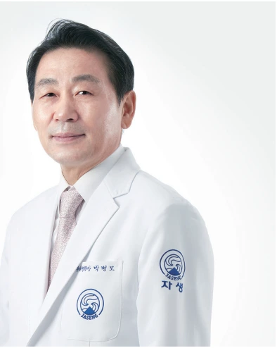
자생척추관절연구소
자생척추관절연구소(JSR)는 자생의료재단이 설립한 독자적인 연구기관입니다. 비수술 척추디스크 치료의 안전성과 유효성 근거를 마련하기 위한 기초·임상 연구와 기술 개발을 수행합니다.
- 한의약의 특성을 반영한 의약품·의료기기 임상시험
- 한의통합치료의 경제성 평가
- 한의학의 과학화·표준화·세계화를 위한 연구
통합의학 전문 영문 국제학술지 Perspectives on Integrative Medicine(PIM)은 한의학과 통합의학 분야의 치료 기전 및 과학적 근거를 다룹니다.
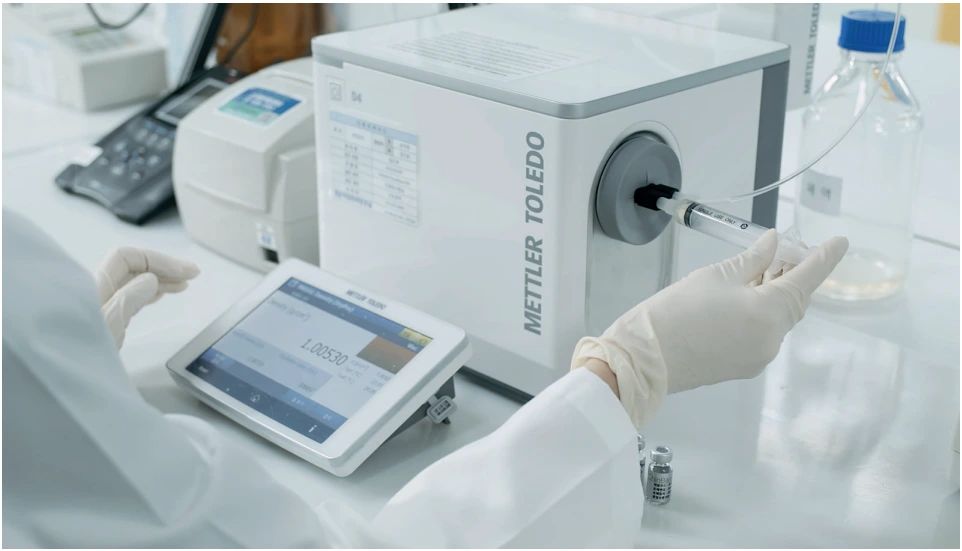
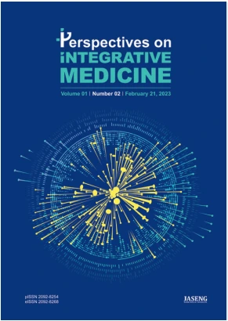
사회공헌 활동
독립유공자 지원 및 보훈활동
생존 애국지사와 귀환국군포로 참전유공자 의료지원
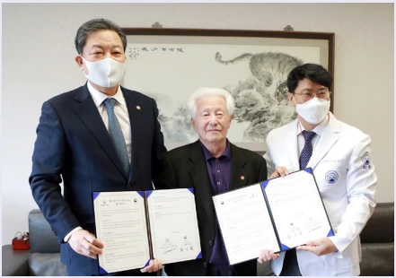
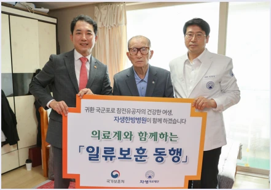
사회취약계층 의료지원
농업인 행복버스와 지역사회 의료봉사
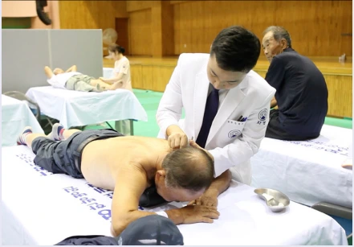
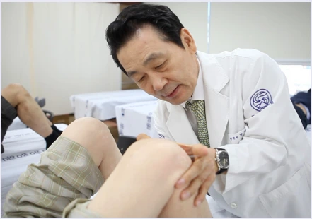
저소득 가정 아동·청소년 지원
자생 Angel box 전달과 자생 희망드림 장학사업
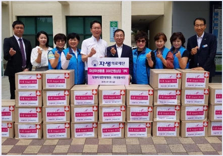
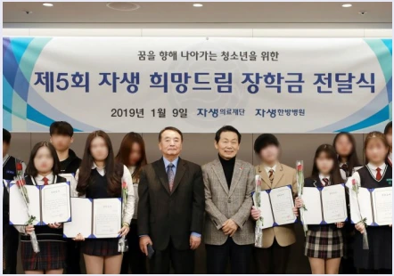
꿈나무 지원 장학사업
자생 꿈나무 올림픽과 한의사 직업체험
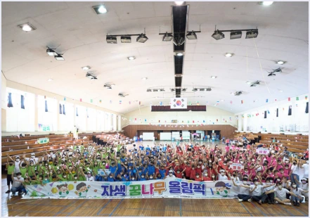
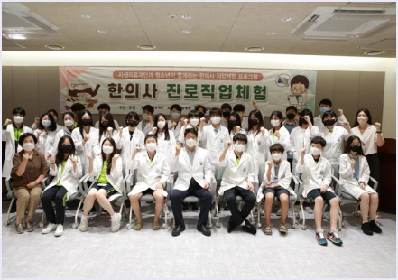
이웃과 나누는 사회복지
사랑의 연탄 나누기와 김장김치 나누기
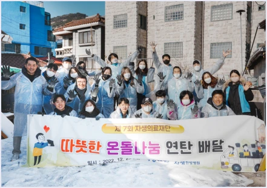
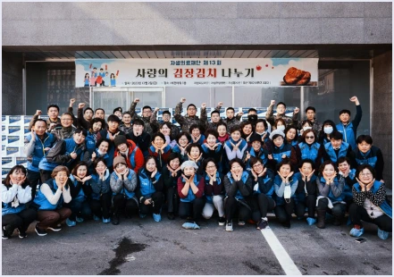